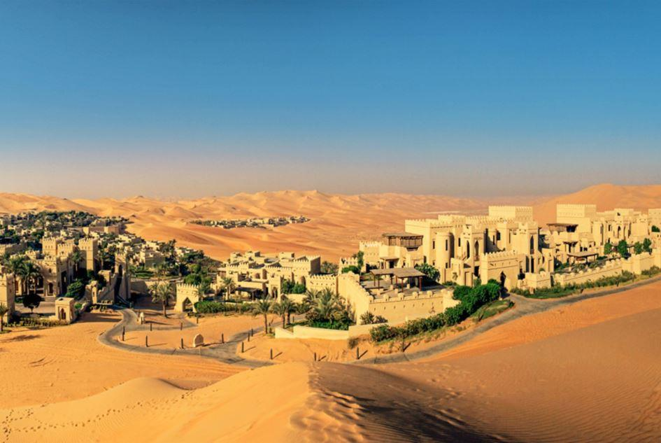
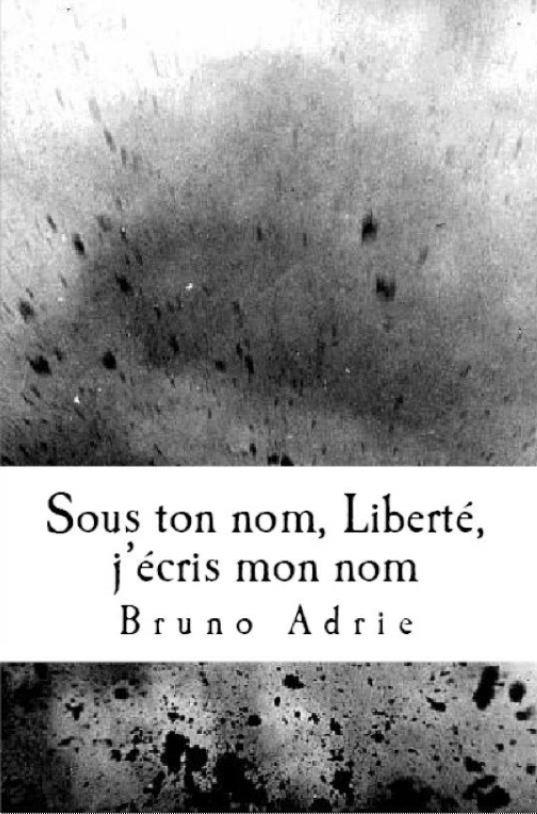

Il vient d’arriver ! À peine descendu de l’avion au ronron doublé cuir dans lequel il a dormi, manquant le spectacle des nuages, il est cerné d’uniformes noirs qui le pressent et le portent, rapides. Leurs têtes pivotent en tous sens, comme des tourelles de tanks, sur des cous brefs et épais comme des baobabs ; leurs bouches se tordent, tirent sur les rictus sévères qui leur balafrent la mâchoire ; ils se donnent du courage à coups de syllabes crachées comme des coups de fouet. Tout va si vite sous le tissu renforcé des tenues de combat : des muscles de caoutchouc dur battent comme un seul cœur affolé ; des tendons d’acier trempé s’étirent et plient sans se rompre ; des pistons infatigables coulissent sans un bruit, sans frottement, sans usure.
Ils sont vingt-quatre, vingt-quatre index prêts à presser vingt-quatre gâchettes et à ouvrir le feu sur quiconque barrera la route à l’étrange cortège qu’ils forment. Entouré par ces hommes sans visage – leurs yeux se dissimulent sous d’opaques visières – il se laisse entraîner, rassuré par cette démonstration de force et d’efficacité, jusqu’au convoi de voitures blindées – quatre en tout – noires, luisantes comme des nappes de pétrole brut sous les feux de l’Enfer, avec leurs pneus énormes à l’épreuve des balles.
On le hisse dans la deuxième, cinq hommes l’accompagnent à l’arrière, un de chaque côté, trois face à lui, dans le sens de la marche. La portière coulisse, lourde, rassurante, et se referme en soufflant, hermétique comme la porte d’un coffre-fort. À travers les vitres teintées, des pistes étirées comme des serpents, des tanks en manœuvre, des bataillons au trot, la tour de contrôle puis des hangars qui s’éloignent, des cadavres qui gisent, collés au sol, couverts de sang séché, des pistes encore, de chaque côté, zébrures infinies, rubans de bitume qui cherchent l’horizon, des tanks, des tanks, des tanks, cent moteurs à marteaux, de chaque côté de la route, couverts de plaques poussiéreuses qui renforcent leur blindage. Puis un dernier bâtiment, un poste de douane, criblé d’impacts, affaissé et tremblant, fatigué par trop de guerre. Une barrière qui se ferme sur un salut martial qu’on perd de vue en un clin d’œil... Le paysage est un tapis qu’une présence irrésistible tire vers l’arrière, de plus en plus vite, et entraîne de tout son poids vers l’abîme. Comme un vêtement qui tombe… En quelques secondes, il n’y a plus que le désert. Sa nudité et la route. Au-dessus, le soleil jette dans l’azur trop pâle cent millions d’épingles dorées. Chaleur irrespirable.
Dans la voiture blindée, il fait frais, presque trop. Il remonte son col, il a froid aux oreilles. À travers les vitres épaisses, tout paraît gris. Le convoi avance à plus de trois cents kilomètres heure. Des bosses… Les véhicules sautent, l’un après l’autre, puis atterrissent, dansant sur des essieux rôdés à la trémousse. Au milieu des secousses, un garde lui tend un carnet et lui demande un autographe. Il prend la plume que lui présente le chauffeur entre ses gants beurre frais et s’exécute en souriant. Il sourit toujours, le nez retroussé, la bouche entrouverte sur une langue rouge sang. On ne voit pas ses dents. Peut-être n’en a-t-il plus ? Il est âgé tout de même, malgré les apparences. Il sourit et ses grands yeux posent sur son public un éclat de malice et d’espièglerie qui ne laisse aucun doute sur ses qualités d’amuseur.
Le désert file maintenant, ultraplat, ultralisse, vitrifié par la vitesse. Où va-t-il ? Chez lui, dans un domaine volé par les forces de la coalition à ces terres incultes et recuites ; chez lui, dans un château de contes de fées que les multinationales du béton, de la ferraille et du verre ont dressé pour qu’il puisse y séjourner et proposer aux malheureux quelques heures de rêve en échange de leurs économies. Ce pays en a bien besoin. Trop de souffrance. Dans quelques jours, il déchirera, devant un public ébahi, le voile d’angoisse qui couvre cette contrée semée de mitraille. Il lui fera croire que, même ici, on peut échapper au crime, à la mort, au sang qui coule et frit à même les plaies sous les rayons calorifères d’Ahura Mazda.
Des vagues de chaleur roulent depuis le grand radiateur céleste et chassent les nuages en leur brûlant le dos.
Le chauffeur lui tapote l’épaule. Il se retourne et voit au loin la silhouette gigantesque de la demeure qu’il va bientôt habiter. Ses murailles s’élèvent, kilométriques et irréelles et lui donnent l’aspect d’un gâteau géant, d’une ziggourat de rêves pastel, sur laquelle des dizaines de tours aux coupoles vernies et aux fenêtres minuscules ont été plantées. D’où il les observe, ces tours ressemblent à un faisceau serré de bougies bariolées, coiffées de flammes au-dessus du désert qui brille, blanc, éclatant, comme si quelque Gilgamesh pâtissier était venu y jeter d’énormes pelletées de sucre. L’image lui plaît car il est gourmand, comme les enfants.
Quel parcours pour en arriver-là ! Dire qu’au début il ne voulait pas venir, il était bien là-bas, en Californie où il passe la plus grande partie de l’année. Il a bien quelques résidences secondaires, en Empire, en Europe, dans des pays rassurants, aux populations dociles, domestiquées, où la violence est confisquée par les multinationales – dont la sienne – et par l’État, qui les sert. Lorsqu’il va dans ses résidences, il est acclamé comme un héros par tous, sans exception, surtout par les enfants dont les yeux brillent en le voyant passer dans le cortège d’honneur qui le mène à ses appartements très surveillés. Il les salue, lève une main toujours gantée – il n’a jamais ôté ses gants depuis les année trente et certains critiques ont, un jour, émis l’hypothèse qu’il n’avait pas de mains mais des pattes et que c’était pour cette raison qu’il les cachait au public. Ses agents, souriants, ont fait la sourde oreille et ont écarté d’un geste les accusations qui, il faut le dire, avaient été prononcées par des journalistes douteux. Peu après, on leur a confisqué leurs cartes de presse et, discrètement, on les a déportés au fort de Wotanuamo, démocratie oblige.
Les populations civilisées ne comprennent pas qu’on mette en doute sa bonté : elles crient tout de suite au scandale. À la moindre ébauche de critique, elles sont étranglées par un magma d’indignations qui leur remonte à la gorge par tous les tuyaux. Les passants interrogés par les Nouvelles-du-Ciel déclarent :
- Les enfants sont son public par excellence !
- Son visage est l’image même de la gentillesse !
- Son sourire est le sourire le plus universel et le plus communicatif du globe !
- Ses manières sont délicates !
- Lorsqu’il prend un ou deux ou même trois enfants dans ses bras – car il est très fort – pour une photographie souvenir, il est l’image même d’un père aimant ou d’un grand frère protecteur, vous ne trouvez pas ?
- Pour un public informé comme le nôtre, les critiques ne peuvent émaner que des services secrets soviétiens.
- Les Soviétiens sont prêts à tout pour ruiner les valeurs impériales !
- Qu’on n’aille pas me faire croire le contraire ! À ce petit jeu, on ne m’aura pas de sitôt !
Le convoi file dans le désert – quatre balles noires – sous un soleil qui décline, fatigué, et tombe presque, au milieu d’un paysage désolé, d’une mer de sable, au ressac immobile, caressée par des rafales tiédies qui écrêtent ses vagues soyeuses et chaudes sur lesquelles on aimerait bien s’étendre et flotter.
Le palais est tout proche maintenant et laisse traîner son ombre noire comme un pont-levis ouvert pour accueillir les forces de la nuit. On ralentit, les moteurs s’arrêtent, la porte coulisse et se bloque, ouverte, laissant pénétrer les embruns du désert au parfum poivré. Les gardes sautent à terre, lui font signe de descendre, leurs oreillettes leur susurrent que tout est en ordre. Il pose sur le sable ses escarpins luisants protégés par des guêtres boutonnées. Une clameur le fait sursauter ! Les gardes se retournent et mettent en joue. Tout autour d’eux, des milliers d’enfants crient leur joie de le voir arriver – ils savaient donc, les haut-parleurs de la réclame avaient bien fonctionné – ils tendent vers lui leurs petits bras noircis par le soleil que des haillons peinent à recouvrir. Dans leurs pupilles sombres, il lit la joie de voir enfin celui que la Terre entière connaît et apprécie, celui qui apporte la paix et le réconfort, celui qui donne du monde une image acceptable, rassurante, pleine d’espérance pour l’avenir. Tous ces enfants ont connu la guerre, ça se voit : certains se traînent par terre, ils n’ont pas de jambes, d’autres ont perdu un bras, ou les deux, un œil, une oreille. Quelques-uns ont un pan de cuir chevelu arraché et rabattu sur la tempe. Leurs visages marqués par la souffrance et la faim sont couverts de brûlures et des cicatrices barrent leurs sourires comme pour leur interdire le bonheur.

« Ce ne sont plus des enfants, se dit-il, mais seulement des caricatures d’enfants, des morceaux d’enfants, des lambeaux d’enfants. Mais ils restent à croquer. Ce soir, au lieu d’en prendre un ou deux, j’en avalerai quatre et je serai repu. Ils sont si nombreux qu’ils fourniront de quoi me nourrir pendant tout l’été. Si nous visitions le palais… et ses cuisines… »
Telles sont ses dernières pensées. À peine a-t-il fait quelques pas entre ses vingt-quatre gardes qu’un sifflement se fait entendre, suivi de plusieurs explosions. Les quatre véhicules blindés prennent feu instantanément, les vingt-quatre gardes lâchent leurs armes et courent en tous sens, couverts de flammes crépitantes que les zigzags et les cris ne parviennent pas à éteindre. Lui est couché sur le dos, paralysé par des éclats qui ont perforé ses organes vitaux et lui font découvrir le sens du mot souffrance. Mais ce n’est pas fini : sa dernière vision est celle d’une horde d’enfants infirmes se traînant vers lui en riant, enfants affamés par la guerre et qui commencent à le dévorer avant même qu’il ne perde connaissance.
Les bureaux de la Presse-à-Cervelles reçurent cette dépêche, recopiée intégralement en première page de son édition matutinale :
L’Empire en deuil
Par notre correspondant à Ghernikagdad
Alors qu’il venait inaugurer sa nouvelle usine à spectacles sur le territoire du Khalifat Aride et Hydrocarbique encore en proie à la guerre, Mickey Mouse a été abattu avec sa garde rapprochée par un tir de roquettes dont l’origine reste à déterminer. Son corps n’a pas été retrouvé et les spécialistes craignent que des bêtes de proie ne l’aient dévoré avant l’arrivée des secours. N’ont été découvertes sur place, au milieu des corps calcinés de ses vingt-quatre gardes du corps, que ses grandes oreilles, ses guêtres et une paire de gants beurre frais que l’ami des enfants portait depuis les années trente. Ces reliques seront conservées dans les locaux de la Fondation Sphincter des Arts Abstrus, Abscons et Amphigouriques (FS4A).
Le journaliste Pepper Larbor prononcera son oraison funèbre devant les caméras de l’Écran-qui-dit-tout depuis le grand hall de la FS4A.
B.A.
Découvrez les autres nouvelles de notre ami Bruno ADRIE dans son recueil
Partager cette page